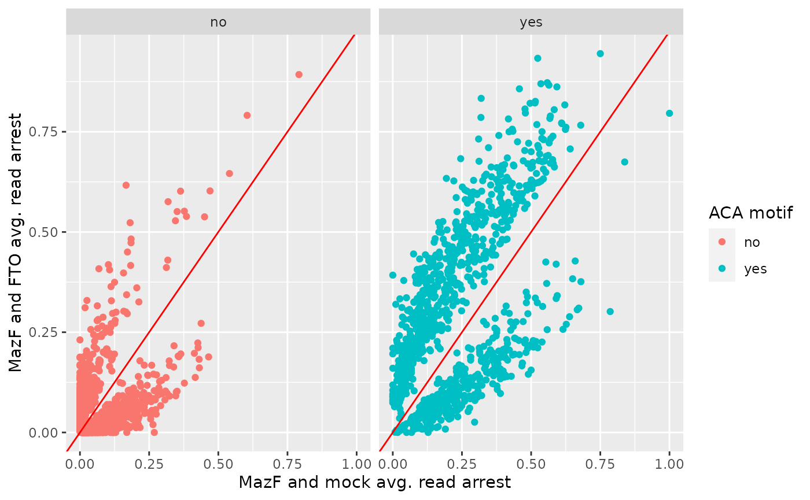
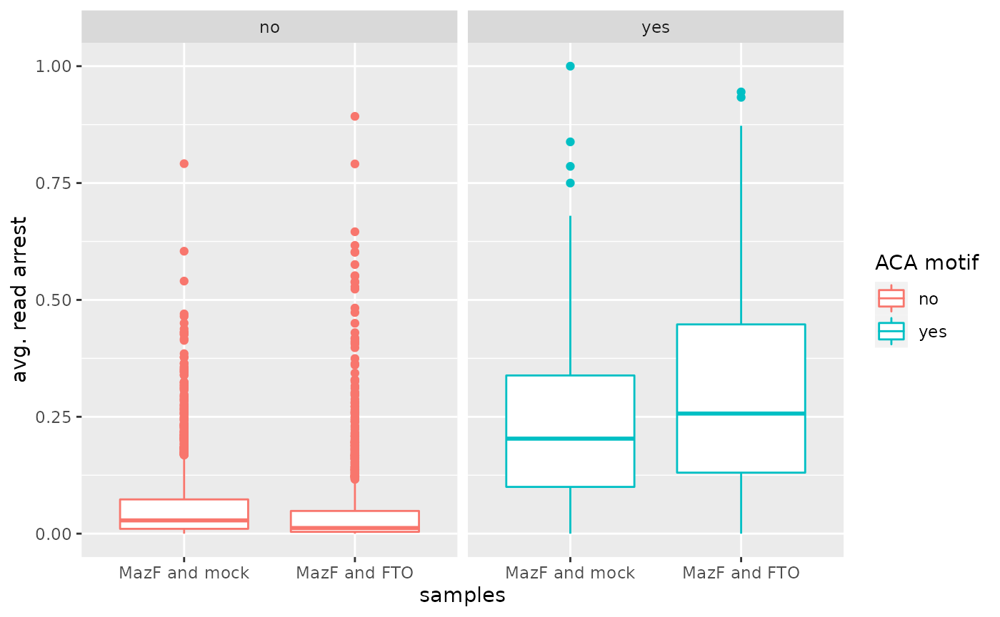
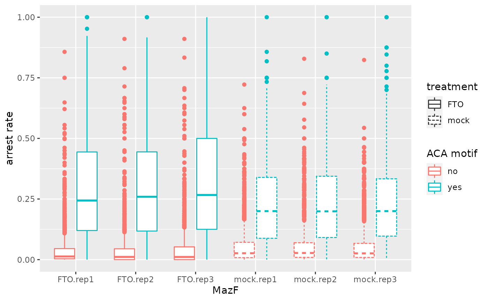

Analysis of m6A mapping by MazF with JACUSA2helper
Christoph Dieterich, Michael Piechotta
2023-01-18
Source:vignettes/JACUSA2helper-mazf.Rmd
JACUSA2helper-mazf.RmdSee vignette("JACUSA2helper") for general description of
analysis with JACUSA2helper. For details on JACUSA2, check the JACUSA2
manual.
In the following, the use of the rt-arrest function will be applied to a MazF digestion assay from Zhang et al. (2019) (use case 1 in Piechotta et al. (2021)). Herein, 3 replicates of HEK293 mRNA were treated with FTO or mock treated and then subjected to a MazF digestion assay.
Pre-processing MazF data
For this analysis we need to add bases(+2nt) downstream of identified SNVs to compare against the expected ACA motif. We compiled a Bash script that adds bases downstream of SNVs to the info field: add_seq.sh.
You will need the FASTA sequence that you used to map your reads and the matching FASTA index. Make sure that you have bedtools and awk installed.
- Download add_seq.sh
- Check if the index “
.fai” exists, otherwise run: “samtools faidx ” ./add_seq.sh -j <JACUSA> -f <FASTA> > <PROCESSED>
The info column in <PROCESSED> should
contain values such as: “seq=ACG”. The first position corresponds to the
position of SNV. Position 2 and 3 are downstream of the SNV.
Filter MazF data
JACUSA2helper directly reads output from JACUSA2 via the
read_result function. Make sure to run
read_result(..., unpack=True) to make data stored within
the info field available.
As a next step, we apply filters on the pvalue, read coverage(cov), and select only robust events. This means that only sites are retained where an arrest event is visible across all replicates in at least one condition.
Read and merge sequence motif information at cleavage site
The data structure is modified such that the presence or absence of the canonical cleavage side motif is added (see also Figure 1D in Piechotta et al. (2021)).
filtered$ACA <- ifelse(filtered$seq == "ACA", "yes", "no")Scatter plot of average arrest rates
Arrest rates are plotted depending on the presence or absence of an ACA motif.
# rearrange metadata - calculate average arrest rate
df <- data.frame(
cond1 = rowMeans(GenomicRanges::mcols(filtered)$arrest_rate$cond1),
cond2 = rowMeans(GenomicRanges::mcols(filtered)$arrest_rate$cond2),
ACA = GenomicRanges::mcols(filtered)$ACA
)
# scatter plot
df %>%
ggplot2::ggplot(ggplot2::aes(x = cond1, y = cond2, color = ACA)) +
ggplot2::geom_point() +
ggplot2::geom_abline(colour = "red") +
ggplot2::xlab("MazF and mock avg. read arrest") +
ggplot2::ylab("MazF and FTO avg. read arrest") +
ggplot2::labs(color="ACA motif") +
ggplot2::facet_wrap(.~ACA)
Box plot of average over arrest rates and significant sites
# scatter plot
reshape2::melt(df, variable = "condition", value.name = "arrest_rate") %>%
mutate(condition=recode(condition, cond1="MazF and mock", cond2="MazF and FTO")) %>%
ggplot2::ggplot(ggplot2::aes(x = condition, y = arrest_rate, color = ACA, line_type = condition)) +
ggplot2::geom_boxplot() +
ggplot2::xlab("samples") +
ggplot2::ylab("avg. read arrest") +
ggplot2::labs(color="ACA motif") +
ggplot2::facet_wrap(.~ACA)
#> Using ACA as id variables
Box plot of arrest rates over all replicates
Arrest rates are plotted depending on the presence or absence of an ACA motif in FTO and mock treated HEK293 cells. (Corresponds to Figure 1E in Piechotta et al. (2021))
toplot <- reshape2::melt(as.matrix(filtered$arrest_rate))
toplot$ACA <- rep(filtered$ACA, 6)
colnames(toplot) <- c("Id", "sample", "arrest_rate", "ACA")
# add informative labels
toplot$sample <- gsub("cond1", "mock", toplot$sample)
toplot$sample <- gsub("cond2", "FTO", toplot$sample)
toplot$treatment <- gsub("\\.rep[0-9]+", "", toplot$sample)
ggplot2::ggplot(toplot, ggplot2::aes(x = sample, y = arrest_rate, linetype=treatment, color=ACA)) +
ggplot2::geom_boxplot() +
ggplot2::ylab("arrest rate") +
ggplot2::xlab("MazF") +
ggplot2::labs(color="ACA motif")